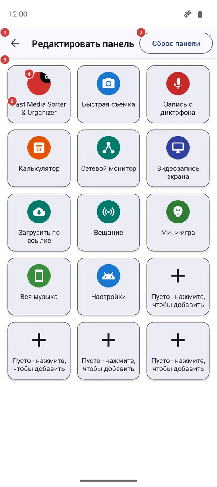
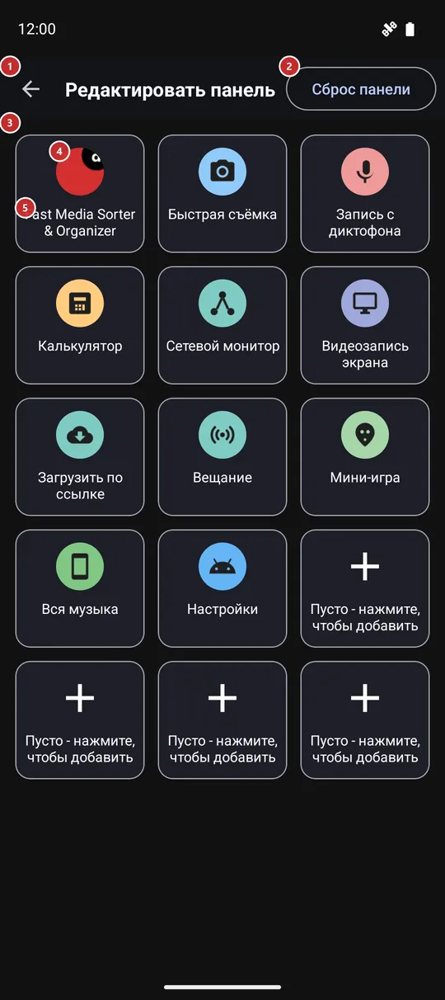

Редактировать панель
Для чего этот экран
Выберите, что показывает панель «Быстрый запуск». На панели пятнадцать постоянных мест; здесь вы заполняете каждое приложением, инструментом FastMediaSorter, одним из ваших ресурсов или экраном настроек Android, а также можете менять плитки местами и очищать их.


Порядок действий
- Сюда попадают кнопкой «Изменить» на панели «Быстрый запуск», нажатием на свободное место на ней или из настроек жестов края экрана. Сетка 3 показывает панель в её нынешнем виде.
- Нажмите свободное место 5 или любую плитку 4. Окно «Добавить на панель» 9 спросит, какой ярлык нужен: приложение, функция FastMediaSorter, ресурс FastMediaSorter или настройка Android.
- Откроется список выбранного вида (11-14). Нажмите нужный пункт, и он сразу встанет на место. В коротком списке поля поиска нет, в длинном оно появляется 10.
- Чтобы изменить уже стоящую плитку, нажмите на неё и удерживайте: «Переместить» 6 меняет её местами с другим местом, «Заменить» 7 снова открывает выбор вида, «Удалить» 8 освобождает место.
- «Сброс панели» 2 после подтверждения возвращает стандартный набор. «Назад» 1 закрывает экран - каждое изменение сохраняется сразу.
Элементы
Верхняя панель
1НазадЗакрывает экран и возвращает к панели.
Сохранять нечего: каждое изменение записывается сразу, а панель покажет его при следующем открытии.
2Сброс панелиВозвращает панель к набору, который был после установки.
Приложение спрашивает «Сбросить панель?» и поясняет, что панель вернётся к набору программ и ярлыков по умолчанию, как после установки. Пока вы не подтвердите, ничего не меняется. Стандартный набор - это сначала FastMediaSorter, затем его собственные инструменты, которые есть в вашей редакции, один из ваших ресурсов и настройки Android, а последние места остаются свободными.
- Отмена
- Все ваши плитки пропадают, и возвращается стандартный набор. Чтобы вернуть плитку, добавьте её снова.
Сетка плиток
3Сетка плитокПятнадцать постоянных мест панели.
В сетке три столбца в узком окне и пять в широком - как и на самой панели. Число мест изменить нельзя. Каждое место - это либо плитка со значком и названием, либо свободное место с плюсом. При открытии экрана фокус клавиатуры и D-pad переходит на сетку.
4ПлиткаЯрлык, который уже есть на панели.
Нажмите, чтобы заменить: окно «Добавить на панель» откроется для того же места, и выбранное встанет вместо прежнего. Нажмите и удерживайте, чтобы открыть меню «Переместить», «Заменить», «Удалить». Значок показывает, что откроет плитка: у приложения остаётся свой значок, а у инструментов и настроек - свои.
5Пусто - нажмите, чтобы добавитьСвободное место, которое ждёт ярлык.
Нажмите или нажмите и удерживайте - здесь это одно и то же, - и откроется окно «Добавить на панель». Место остаётся свободным, пока вы ничего не выберете.
Меню плитки (долгое нажатие)
6ПереместитьПереносит плитку на другое место.
Откроется список мест с номерами от 1 до 15. Выберите нужный номер. Если на этом месте уже есть плитка, плитки поменяются местами; если оно свободно, плитка просто переедет. «Отмена» оставляет всё как было.
7ЗаменитьСтавит на это место что-то другое.
Открывает то же окно «Добавить на панель», что и нажатие на плитку. Новый выбор занимает место прежнего; старая плитка не сохраняется.
8УдалитьОсвобождает место.
Плитка сразу снимается с панели, без вопроса, и место снова свободно. Приложение, инструмент или ресурс, на которые она указывала, не затрагиваются.
- Отмена
- Вернуть плитку кнопкой отмены нельзя. Добавьте её снова на свободное место или воспользуйтесь «Сбросом панели», чтобы получить стандартный набор.
Окно «Добавить на панель»
9Добавить на панельСпрашивает, какой ярлык поставить на это место.
Короткий список из четырёх вариантов: «Приложение», «Функция FastMediaSorter», «Ресурс FastMediaSorter» и «Настройки ОС Андроид». У каждого свой список. «Отмена» закрывает окно, ничего не меняя. То же окно открывается и при «Заменить».
10Введите для поискаСужает длинный список по мере ввода.
У поля есть кнопка очистки, и оно появляется, только когда список длиннее окна; в коротком списке поля нет. Введите часть названия, и строки сужаются прямо при вводе. Если ничего не подходит, в списке написано «Ничего не найдено». Во всех четырёх списках ниже поиск работает одинаково.
11Выберите программуСписок приложений, которые можно закрепить плиткой.
Показывает установленные на телефоне приложения, которые можно запустить, по алфавиту и каждое со своим значком. Нажмите одно, и оно встанет на место. Если потом удалить это приложение с телефона, его плитка ничего не откроет.
12Выбор функцииСписок инструментов и экранов самого FastMediaSorter.
Показывает то, что есть в вашей редакции, например калькулятор, секундомер, сетевой монитор, мини-игру, «Потоки» и «Избранное»; сначала идут инструменты, затем остальное. Инструмент, выключенный в настройках, остаётся в списке с пометкой «Выключено - нажмите, чтобы включить»; плитка с ним открывает соответствующую настройку вместо инструмента. Функции, которых нет в вашей редакции, в списке не показываются.
13Выбор настройки ОС АндроидСписок экранов настроек Android, которые можно закрепить.
Показывает только те экраны, которые телефон действительно может открыть: «Настройки», Wi-Fi, Bluetooth, «Дисплей», «Звук», «Батарея», «Хранилище», «О приложении», «Дата и время» и, если они есть в телефоне, «Для разработчиков», «Энергосбережение», «Автоповорот», «Специальные возможности», «Беспроводные сети», «Передача данных», NFC, VPN, «Геолокация» и «Точка доступа». Экрана, которого нет в вашем телефоне, в списке просто нет.
14Выбор ресурсаСписок ваших ресурсов, которые можно закрепить.
Показывает ваши ресурсы по названию, каждый со значком своего типа - папка на устройстве, сетевая папка или облако. Одна плитка указывает на один ресурс; позже нажатие на плитку на панели открывает этот ресурс в браузере файлов.